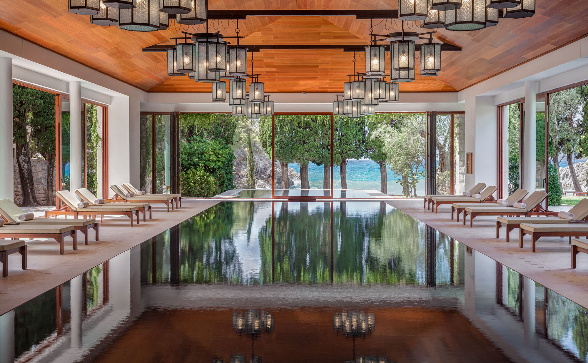

Toured firsthand with the GM ahead of the island's reopening — straight answers on beaches, suites, and buyouts.
I spent an afternoon at Aman Sveti Stefan touring Villa Miločer and sitting down directly with the GM ahead of the island's reopening. I work directly with the team there, and everything I share comes from that visit and that relationship — not press materials.
Villa Miločer surprised me. I assumed the Garden View Suites were inside the villa, but they aren't — the one I toured is in a separate building about a two-minute walk uphill, and there are only two of them. The room was huge and far more residential than I expected: large bedroom, generous bathroom, then a hallway into a separate living and dining room. The design is exactly what you'd imagine from Aman — quiet, understated, lots of Japanese influence, nothing trying too hard.
The spa was probably my favorite part of the visit: a newer building with an indoor/outdoor pool under huge vaulted timber ceilings, opening directly toward Queen's Beach — which might be the prettiest beach I've seen in Montenegro. There's now a restaurant there too, so I could easily see spending an entire afternoon between the spa, lunch, and the beach.

Queen's Beach. Expected to remain exclusive to Aman guests, accessed through a gated entrance — and possibly the prettiest beach I've seen in Montenegro.
The spa building. Vaulted timber ceilings, an indoor/outdoor pool facing Queen's Beach, and its own restaurant, reserved exclusively for hotel guests.
A refreshing photography policy. Aman asked that I not share my photos — no filming in public areas with guests present, no tripods, no drones. In a world of hotels built for social media, I found that pretty refreshing.
Zuma and Nammos within walking distance. I had lunch at Zuma after the tour — fantastic service — and having both nearby is a big improvement for four- or five-night stays.
Island or villa? Here's my line. Traveling with kids, a stroller, or mobility concerns: book Villa Miločer. As a couple already spending around €4,000 a night, spend the extra ~€200 and stay on the island — that's the experience you're flying to Montenegro for.
The villa isn't as private as you'd think. A public walking path runs directly in front of it, plus a small local road into town. Neither bothered me, but if absolute privacy is the priority, the island is still the obvious choice.
Reopening details, honestly stated. They're hoping to reopen around July 1 without guaranteeing the date; entry-level rooms won't be offered this season, and only 16 of the 27 Deluxe Cottages are expected initially, ranging roughly 60–100 square meters.
Fly into Tivat. Helicopters exist, but international arrivals still clear immigration first — it's not as seamless as the Maldives. Also note the Janu under construction next door, visible from parts of the property.
Everything here comes from walking the property with the GM — and if you're already spending €4,000 a night, stay on the island.
Rates through me are identical to booking direct — the perks are not. As a Fora advisor, my clients receive a space-available upgrade, daily breakfast, and a hotel credit — plus my direct line to the team on property before and during your stay.
Check Availability